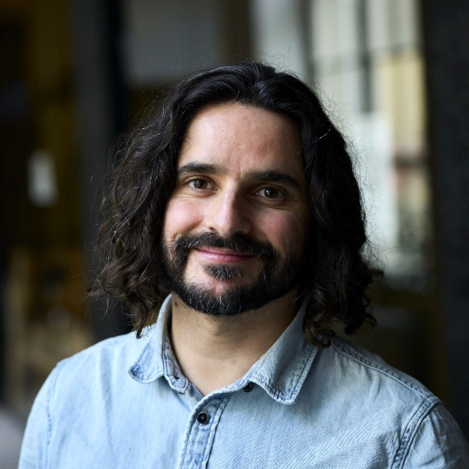

About me
My years as business manager
With a Bachelor in Business Administration, I worked in different roles at different companies and industries. Whether as the key person
to build a start-up from the ground, as a project manager to introduce a brand new product, or as the leader of two real estate companies, I’ve
always been driven by curiosity. This has helped me embrace change, learn how to adapt to new environments, manage key stakeholders, and face all
the challenges that come with it.
In my next professional chapter, I decided to move to Germany to pursue an MBA at ESMT Berlin. While preparing my application
I dedicated one year to understanding clients from a different perspective by aiding Facebook and Instagram clients with their ads for their
businesses.
During my MBA studies, I worked as a consultant for E.ON, developing a framework for a specific go-to-market strategy involving energy
communities. Later on, I volunteered to help an initiative called Negotiations for the World, to bring negotiation lessons to countries where is
not possible to find these teachings.
My years as web developer
When I was a kid, I remember dismantling my old gaming console, very curious about what I would find inside. Obviously, I was never able to put
all the components back again (no Google at that time). This is my first memory of my curiosity about tech and how things work. Throughout my
entire professional life, I’ve been consciously and unconsciously approaching developers and asking questions about their work. Even when I was
implementing a sales platform at a start-up, I was always asking technical questions. I even ended up doing some MOOC courses afterward. But it
wasn’t until I finished my MBA, that I realized I should have the courage to follow my true passion.
I attended full-time to a web development bootcamp at Le Wagon, where I learned the basics of HTML, CSS, and Javascript, and dove deep into Ruby
on Rails. After I finished, I wanted to consolidate my knowledge and started working as a teaching assistant at the same place, finally being
promoted to teacher.
Finally, after 14 months I decided to step back and dedicate myself to working on my first freelance project and search for a position where
I can apply all my knowledge and go deeper into full-stack web development.